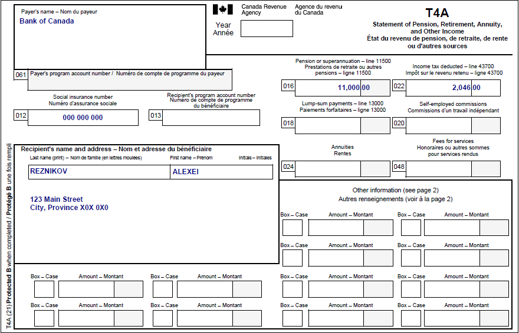
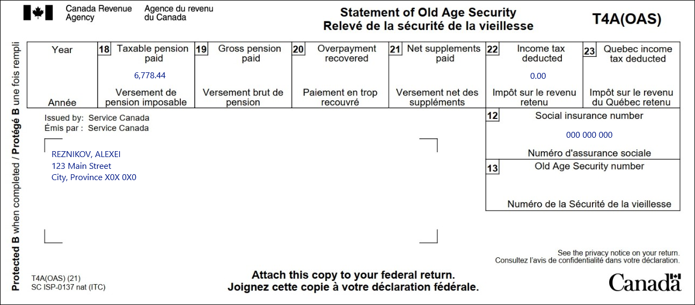
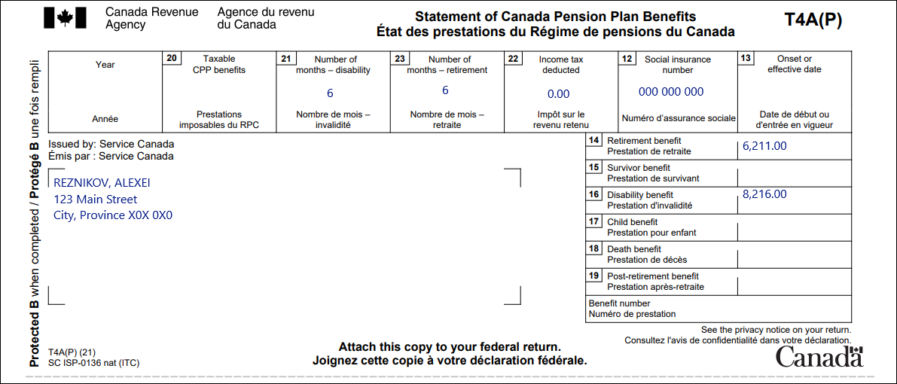
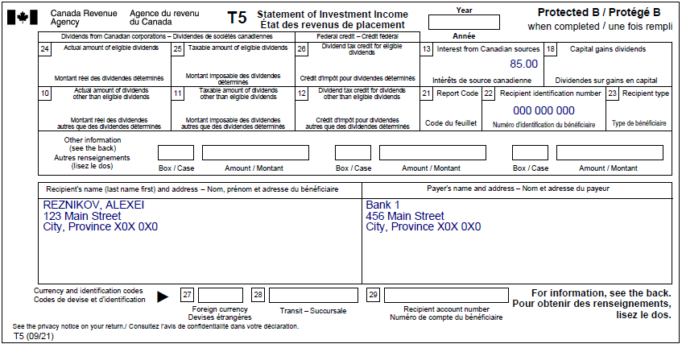
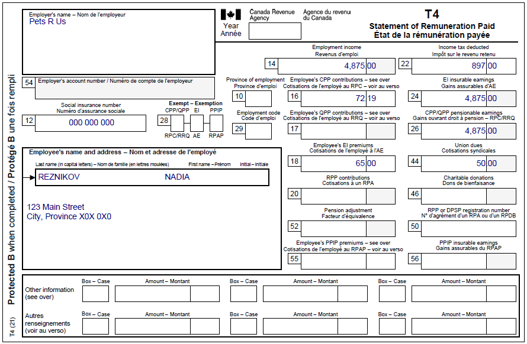

Transfer disability tax credit to spouse
Pre-test question
Sorry, that's incorrect
To find out if an individual is eligible for the disability tax credit, they must submit a completed T2201 form to the CRA. This form must be completed and signed by a health practitioner.
That's correct
To find out if an individual is eligible for the disability tax credit, they must submit a completed T2201 form to the CRA. This form must be completed and signed by a health practitioner.
Instructions
- Open the tax software
- Review the Background information and Required slips (tax slips, receipts, etc.)
- Provide all required information for the appropriate sections of the tax software
- Once completed, compare your results with the solution provided
- Afterwards, refer to the Takeaway points
Background information
Situation
Nadia is employed at Pets R Us. Alexei is retired and receives income from the Canada Pension Plan (CPP), Old Age Security (OAS), interest, and superannuation (Registered Pension Plan).
Alexei and Nadia do not wish to take advantage of the pension income splitting option. Nadia is approved for the disability tax credit (DTC) and she wants to transfer the unused portion of her credit to Alexei.
Identification information
| Name | Alexei Reznikov |
|---|---|
| Social insurance number (SIN) | 000 000 000 |
| Address | 123 Main Street City, Province X0X 0X0 |
| Date of birth | October 2, 1961 |
| Marital status | Married to: |
Required slips
T4A – Statement of Pension, Retirement, Annuity, and Other Income (for Alexei)
Text version of the T4A slip
T4A – Statement of Pension, Retirement, Annuity, and Other Income
Protected B
Payer’s name: Bank of Canada
Recipient’s name and address:
Last name: Reznikov
First name: Alexei
123 Main Street
City Province X0X 0X0
Box 012: Social insurance number: 000 000 000
Box 016: Pension or superannuation – line 11500: 11,000.00
Box 022: Income tax deducted – line 43700: 2,046.00
T4A(OAS) – Statement of Old Age Security (for Alexei)
Text version of the T4A (OAS) slip
T4A(OAS) – Statement of Old Age Security
Protected B
Issued by: Service Canada
Reznikov, Alexei
123 Main Street
City Province X0X 0X0
Box 12: Social insurance number: 000 000 000
Box 18: Taxable pension paid: 6,778.44
Box 22: Income tax deducted: 0.00
T4A(P) – Statement of Canada Pension Plan Benefits (for Alexei)
Text version of the T4A (OAS) slip
T4A(P) – Statement of Canada Pension Plan Benefits
Protected B
Sent by: Service Canada
Reznikov, Alexei
123 Main Street
City Province X0X 0X0
Box 12: Social insurance number: 000 000 000
Box 21: Number of months – disability: 6
Box 23: Number of months – retirement: 6
Box 22: Income tax deducted: 0.00
Box 14: Retirement benefit: 6,211.00
Box 16: Disability benefit: 8,216.00
T5 – Statement of Investment Income (for Alexei)
Text version of the T5 slip
T5 – Statement of Investment Income
Protected B
Recipient’s name (last name first) and address:
Reznikov, Alexei
123 Main Street
City Province X0X 0X0
Payer’s name and address:
Bank 1
456 Main Street
City Province X0X 0X0
Box 13: Interest from Canadian sources: 85.00
Box 22: Recipient’s identification number: 000000000
T4 – Statement of Remuneration Paid (Pets R Us) (for Nadia)
Text version of the T4 slip
T4 – Statement of Remuneration Paid
Protected B
Employer’s name: Pets R Us
Employee’s name and address:
Last name: Reznikov
First name: Nadia
123 Main Street
City Province X0X 0X0
Box 12: Social insurance number: 000 000 000
Box 14: Employment income – line 10100: 4,875.00
Box 16: Employee’s CPP contributions: 72.19
Box 18: Employee’s EI premiums – line 31200: 65.00
Box 22: Income tax deducted – line 43700: 897.00
Box 24: EI insurable earnings: 4,875.00
Box 26: CPP/QPP pensionable earnings: 4,875.00
Box 44: Union dues – line 21200: 50.00
Review your results
Solutions will be available Feb 2023 via link to PDF.
Takeaway points
Steps to follow
- Review their background information and required slips
- In Interview setup, check the boxes next to Pension income, other income and split pension income, COVID-19 benefits (T4A, T4A(OAS), T4A(P), T4-RCA, T4RSP, T4RIF,T1032) in the Pension section, and Interest, investment income and carrying charges/interest expenses/CNIL (T3, T5, T4PS, T5008, RC359) in the Investment income and expenses section
- Click T4A and pension income in the left-side menu and click the + signs beside each of the following to enter the amounts for each tax slip:
- T4A
- T4A(OAS)
- T4A(P)
- Alexei’s T4A(P) indicates they received both CPP retirement and disability benefits throughout the year; the sum of box 23 and box 21 (number of months) may not exceed 12, so enter a 6 into both the box 23 and box 21 fields
- Click Interest, investment income and carrying charges in the left-side menu and click the + sign next to T5 – Investment income to enter the amounts from Alexei’s T5
- Using Nadia’s profile in Interview setup, tick the boxes next to Employment income and employment insurance benefits (T4, T4E/RL-6) in the Employment income and other benefits section and Medical expenses, disability, caregiver in the Common tax deductions section
- Select T4 and employment income from the left-side menu and click the + next to T4 to enter the information from her tax slip
- Select Medical, disability, caregiver from the left-side menu and click the + sign next to Infirmity and Disability amounts claim for yourself* (line 31600) in the Disability deductions, caregiver section
- Enter the applicable information in the Name or description of infirmity field and select Claim disability amount (default) from the Are you eligible for the disability amount on federal line 31600? drop-down menu
- Select the appropriate responses from the Does this infirmity provide entitlement to the Canada caregiver amount? and Does CRA already have an approved T2201 form registered in the account of your spouse or common-law partner? Drop-down menus
When an individual transfers their unused portion of the DTC to their spouse or common-law partner, the transferred amount is found on line 32600. In this case, the caregiver amount for Nadia is included in the calculation of line 30300, but depending on the circumstances, an individual may also claim the caregiver amount for a spouse on line 30425.
For more information refer to UFile instructions.